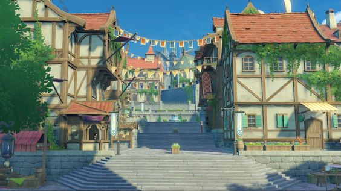
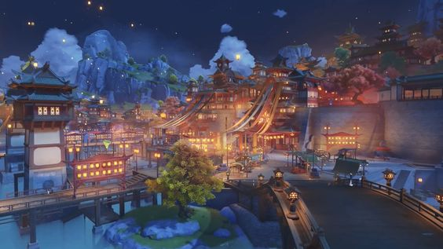
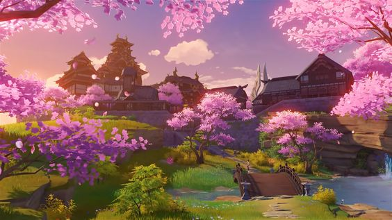

As regiões de Teyvat são bem divididas geograficamente e cada uma delas é protegida e governada pelos 7 arcontes,deuses deste mundo

A capital da liberdade, ao nordeste de Teyvat. Entre cadeias de montanhas e as vastas planícies, o vento da liberdade traz consigo o aroma de Dandelion e acaricia o lago de Cidra, trazendo à cidade, no meio do lago, a bênção de Barbatos.
Um porto próspero localizado ao leste de Teyvat. Liyue está localizada entre o sopé da Floresta de Pedra, das planícies grossas e um litoral cheio de vida, com mudanças sazonais claramente definidas e coloridas. Quantos presentes do Deus da Pedra estão escondidas entre suas montanhas?
Ilhas Isoladas no Extremo Oriente de Teyvat. Supere tempestades sem fim, entre na ilha das flores de Sakura e testemunhe nos penhascos verticais e florestas densas a Eternidade perseguida por Narukami Ogosho Toda-Poderosa
